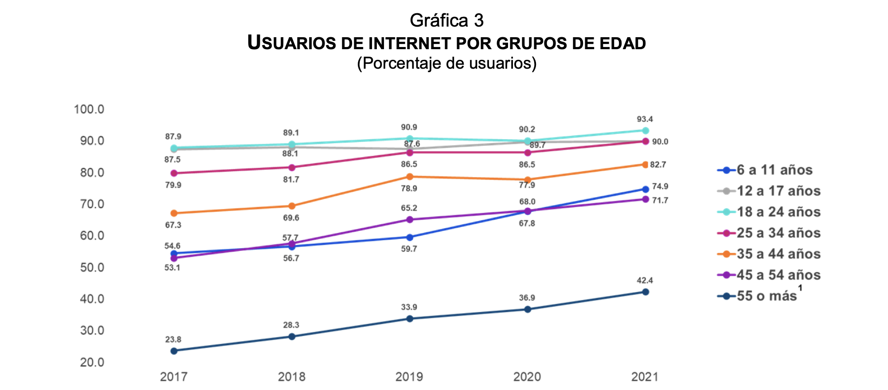
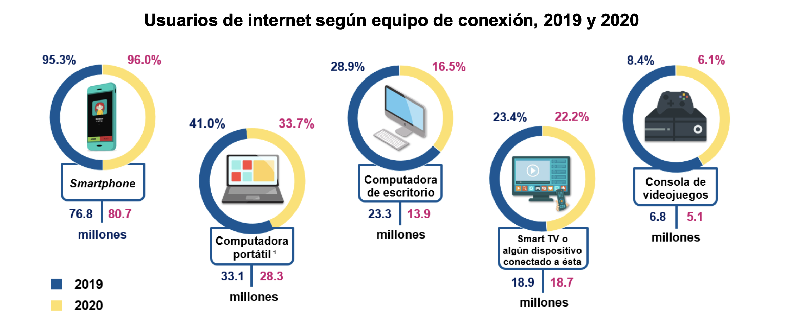

Internet use in Mexico
Menú
Age and gender of users
Internet access points
Main user activities
Age and gender of users
The National Survey on Availability and Use of Information Technologies in Households (ENDUTIH) 2021, carried out by the National Institute of Statistics and Geography (INEGI), in collaboration with the Federal Institute of Telecommunications (IFT), aims to obtain information on the availability and use of information and communication technologies in homes and their use by individuals six years of age or older in Mexico. The foregoing provides data to support decision-making in public policy matters. It also offers elements of analysis in national and international studies for users interested in the matter.
ENDUTIH estimated that in 2021 there were 88.6 million Internet users, which represented 75.6% of the population aged six years or older. This figure revealed an increase of 4.1 percentage points compared to 2020 (71.5%).
 The least use of the Internet was recorded in people aged 55 and over, with a participation of 42.4 percent. Between 2017 and 2021, the trend continued to rise in all age groups and the 6 to 11 year old stood out. It increased its share by 20.3 percentage points from 2017 to 2021.
The least use of the Internet was recorded in people aged 55 and over, with a participation of 42.4 percent. Between 2017 and 2021, the trend continued to rise in all age groups and the 6 to 11 year old stood out. It increased its share by 20.3 percentage points from 2017 to 2021.

Internet access points
The most popular device for browsing the internet is the smartphone. 96.8% of users used this smart device. The use of smart TVs increased from 12.4% in 2017 to 25.7% in 2021. Likewise, the use of video game consoles went from 6.2% to 6.5%.
By contrast, those who connected through a laptop or tablet and a desktop computer decreased by 10.4 and 17.7 percentage points, respectively, between 2017 and 2021. At the end of last year, 15.4 % of users used a desktop computer and 31.8% used a laptop or tablet.

Main user activities
Among the main activities carried out by Internet users in 2020 are to communicate (93.8%), search for information (91.0%) and access social networks (89.0%). It should be noted that the purchase of products or services presents a significant growth of 5.6 percentage points in 2020 (27.7%) compared to 2019 (22.1%). On the other hand, the activities that Internet users perform the least, but that present a considerable change compared to 2019 are: Internet sales with a growth of 2 percentage points (11.3% in 2020), use cloud services with a growth of 2 percentage points (19.4% in 2019 and 21.4% in 2020) and online banking operations with a growth of 4.9 percentage points (16.8% in 2019 and 21.7% in 2020).